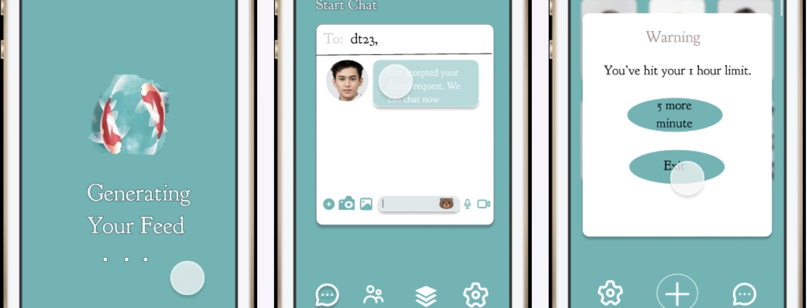

hi, i'm grace 💕
product design · interaction design · prototyping in code
Designer who builds. I work from first sketch to shipped pixels, shaping how people discover, personalize, and enjoy the software they use every day — currently designing Windows experiences at Microsoft, previously at the MIT Media Lab.
My passion lies in interaction design, tangible user interfaces, and the craft layer where design becomes code. I prototype to think, and I am deeply interested in creating meaningful human–computer experiences, especially pushing for ubiquitous computing.
projects
things i've built and shipped
 Sonic Stitches
Explores the theme of TeleAbsence through interactive installations over textiles and immersive experiences.
Sonic Stitches
Explores the theme of TeleAbsence through interactive installations over textiles and immersive experiences.
 Magdalene X²
An autonomous, multi-agent health-intelligence app that unifies labs, cycle, nutrition, fitness, and sleep for women.
Magdalene X²
An autonomous, multi-agent health-intelligence app that unifies labs, cycle, nutrition, fitness, and sleep for women.

Fritter A research-driven social feed redesign that hands curation back to the reader — six concepts, three shipped, taken from interviews through critique to a working app. Yours, Truly
Full-stack wellness journaling web app with structured daily prompts, mood tracking, and secure authentication.
Yours, Truly
Full-stack wellness journaling web app with structured daily prompts, mood tracking, and secure authentication.
my journey as a Christ follower
what grounds and guides me
"For I know the plans I have for you, declares the Lord, plans to prosper you and not to harm you, plans to give you hope and a future."
Before anything, I am first and foremost a Christian. My faith is the foundation of who I am and how I approach my work. It shapes how I build, collaborate, and serve others through technology.
"Whatever you do, work at it with all your heart, as working for the Lord, not for human masters."
I believe that every line of code can be an act of stewardship — using the gifts and talents I've been given to make a positive impact in the world.
In this specific season, God is fine-tuning my heart and making it align more with His. He has shown me how perfect love can cast out all fear, and instead make room for joy, peace, and compassion.
Small Wins Diary
Here I have coded a calendar to celebrate one win each day — because every small step forward is still a step worth honoring. This is to remind me that God is faithful in the little things, and that His grace is sufficient for me every single day.